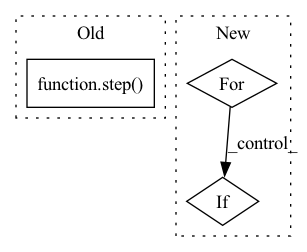

Pattern ID :26654
Before Change
src = (src, zero, src, zero)
if ctx.is_initializing:
ctx.add_depth = True
ctx.parameters = step( ctx) (src, ({}, 0))
ctx.add_depth = False
else:
params = {p: k for p, k in ctx.parameters.items() if is_stacked(ctx, p, k)}After Change
src = input_embed(ctx, src)
zero = jnp.zeros_like(src)
src = (src, zero, src, zero)
for i in range(ctx.dims.depth):
src = reversible(ctx, pointwise_block, src)
src = reversible(ctx, bottleneck_block, src)
src = reversible(ctx, pointwise_block, src)
if i % ctx.model.qrnn_frequency == (ctx.model.qrnn_frequency // 2 - 1):
src = reversible(ctx, qrnn_block, src)
out = revnet_out(src[1:])
out = scale_norm_act(ctx, out, ctx.dims.features, act=False)In pattern: SUPERPATTERN
Frequency: 3
Non-data size: 3
Instances Fragment ID: 79789641
Project Name: homebrewnlp/homebrewnlp-jax
Commit Name: d3689ac1065990625b4a0205242bc2e6016a6a00
Time: 2022-08-28
Author: 39779310+ClashLuke@users.noreply.github.com
File Name: src/model/main.py
M Class Name: AnonimousClass
N Class Name: AnonimousClass
M Method Name: body_ctx(2)
N Method Name: body_ctx(2)
M Parent Class:
N Parent Class:
M File Name: src/model/main.py
N File Name: src/model/main.py
M Start Line: 56
M End Line: 64
N Start Line: 29
N End Line: 36
Before Change
zero = jnp.zeros_like(src)
src = (src, zero, src, zero)
if ctx.is_initializing:
ctx.parameters = step( ctx) (src, ({}, 0))
else:
src, _ = step(ctx)(src, (ctx.parameters, 0))
out = revnet_out(src)After Change
src = (src, zero, src, zero)
src = [ctx.parameters] + list(src)
for _ in range(ctx.model.unroll_depth):
for depth in range(ctx.model.qrnn_frequency):
src = reversible(ctx, pointwise_block, src)
src = reversible(ctx, bottleneck_block, src)
src = reversible(ctx, pointwise_block, src)
if depth % ctx.model.qrnn_frequency == (ctx.model.qrnn_frequency // 2 - 1):
src = reversible(ctx, qrnn_block, src)
// lax.cond could work but requires work on the parameter store
if ctx.is_initializing: Fragment ID: 79789640
Project Name: homebrewnlp/homebrewnlp-jax
Commit Name: 62dfa2ef160a05f91b52c4d92eb607fe251fdfa9
Time: 2022-08-28
Author: 39779310+ClashLuke@users.noreply.github.com
File Name: src/model/main.py
M Class Name: AnonimousClass
N Class Name: AnonimousClass
M Method Name: body_ctx(2)
N Method Name: body_ctx(2)
M Parent Class:
N Parent Class:
M File Name: src/model/main.py
N File Name: src/model/main.py
M Start Line: 50
M End Line: 55
N Start Line: 29
N End Line: 43
Before Change
ctx.add_depth = False
else:
params = {p: k for p, k in ctx.parameters.items() if is_stacked(ctx, p, k)}
src, _ = lax.scan(step( ctx) , src, (params, jnp.arange(ctx.dims.depth)), ctx.dims.depth)
out = revnet_out(src)
out = scale_norm_act(ctx, out, ctx.dims.features, act=False)
wgt = get_param(ctx, "out_embd", [ctx.dims.features, ctx.dims.vocab], std=1,After Change
src = input_embed(ctx, src)
zero = jnp.zeros_like(src)
src = (src, zero, src, zero)
for i in range(ctx.dims.depth):
src = reversible(ctx, pointwise_block, src)
src = reversible(ctx, bottleneck_block, src)
src = reversible(ctx, pointwise_block, src)
if i % ctx.model.qrnn_frequency == (ctx.model.qrnn_frequency // 2 - 1):
src = reversible(ctx, qrnn_block, src)
out = revnet_out(src[1:])
out = scale_norm_act(ctx, out, ctx.dims.features, act=False) Fragment ID: 79789642
Project Name: homebrewnlp/homebrewnlp-jax
Commit Name: d3689ac1065990625b4a0205242bc2e6016a6a00
Time: 2022-08-28
Author: 39779310+ClashLuke@users.noreply.github.com
File Name: src/model/main.py
M Class Name: AnonimousClass
N Class Name: AnonimousClass
M Method Name: body_ctx(2)
N Method Name: body_ctx(2)
M Parent Class:
N Parent Class:
M File Name: src/model/main.py
N File Name: src/model/main.py
M Start Line: 56
M End Line: 64
N Start Line: 29
N End Line: 36
Before Change
def check_step_has_found_entitites(doc, step):
success_docs, failed_docs = step( [doc])
assert len(failed_docs) == 0
expected_hgvs_strings = ["p.Leu90Pro", "c.269T>C", "c.35delG"]
found_hgvs_strings = [
ent.metadata["hgvs"]After Change
def check_step_has_found_entitites(doc, step_entity_class):
for ent in doc.get_entities():
if ent.entity_class == step_entity_class:
unfound_correct_hgvs_strings.discard(ent.metadata["hgvs"])
assert not unfound_correct_hgvs_strings
Fragment ID: 79789645
Project Name: astrazeneca/kazu
Commit Name: af219ddc71c5241d538c467826fe8e9336f2b049
Time: 2022-11-30
Author: RichJackson@users.noreply.github.com
File Name: kazu/tests/test_seth.py
M Class Name: AnonimousClass
N Class Name: AnonimousClass
M Method Name: check_step_has_found_entitites(2)
N Method Name: check_step_has_found_entitites(2)
M Parent Class:
N Parent Class:
M File Name: kazu/tests/test_seth.py
N File Name: kazu/tests/test_seth.py
M Start Line: 13
M End Line: 21
N Start Line: 15
N End Line: 18